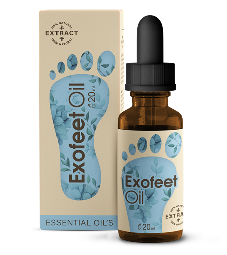

A körömgomba körülbelül minden ötödik embert érint. Bár szomorú, de a gombát el lehet kapni az uszodában, a strandon, a nyilvános zuhanyzókban, a szaunákban, az öltözőkben, vagyis szinte bárhol.
Hogy megtudjuk, mit kell tennünk körömgomba esetén, elbeszélgettünk Adam Rauchhal, az Egészségtudományi Intézet vezető bőrgyógyász specialistájával.
— Kérem, mondja el, mi az a körömgomba? Hogyan alakul ki?
— A körömgomba a körömlemez pusztulása mindenféle kórokozó gomba által. Az emberek nagyon gyakran figyelmen kívül hagyják ezt a betegség kezdetén, és nem fordítanak nagy figyelmet az első jelekre: a bőr repedéseire és hámlására az ujjak bőrén és a lábujjak között. A kórokozók ezután behatolnak a körmökbe, barázdákat és a körmök sárgulását okozzák. A köröm ezután megtörik és leesik.
— Milyen veszélyei vannak a gombás fertőzéseknek?
— Először is, a gomba által érintett körmök a fertőzés nyílt melegágyai, amelyek átterjedhetnek más egészséges körmökre. Ezenkívül az emberek nagyobb valószínűséggel fertőzik meg azokat, akikkel egy háztartásban élnek. A köröm gombás fertőzései súlyosbíthatják a cukorbetegséget és a visszerességet, továbbá a bakteriális fertőzés kiváltó okai lehetnek. Az onychomycosis gomba a körömlemez teljes elvesztéséhez vezethet, ami után nincs lehetőség a köröm regenerálódására. Ez azt jelenti, hogy soha nem fog visszanőni. Ez nem csak esztétikailag kellemetlen, de a mindennapi életben is sok más kellemetlenséget okozhat, hiszen a körmök funkciója az érzékeny ujjbegyek védelme.
Példák az elhanyagolt körömgombára:
— Mit kell tenni a körömgomba megjelenése esetén?
— A múltban nagyon nehéz és időigényes volt a gombák elleni küzdelem. Gyakran hónapokig kellett antibiotikumokat szedni. El tudják képzelni, hogy ez milyen stresszt jelent a májra és a belső szervekre? Erős antibiotikumokat szedni ilyen hosszú időn keresztül!
Éppen ezért osztályunk tudósait azzal bízták meg, hogy a lehető legrövidebb időn belül fejlesszenek ki egy biztonságos terméket a körömgombásodás ellen, amely képes a lehető legrövidebb időn belül hatni.
— És sikerült létrehozniuk egy ilyen készítményt?
— Igen, a készítmény neve . Számos ismert és veszélyes gombás fertőzés ellen hat; segít enyhíteni a viszketést, a fájdalmat és az irritációt. Segít lokalizálni a gyulladást (hogy megakadályozza a gomba további terjedését). Elindítja a fertőzés által károsított sejtek helyreállítását, és megszünteti a baktériumok által okozott kellemetlen szagot. Segít továbbá serkenteni a köröm regenerálódását, így a köröm érintett területei gyorsabban visszanőnek.
Általában egyetlen kúra elegendő a pozitív eredmény eléréséhez.
Az alábbi adatok az Egészségügyi Tudományos Intézet belső tanulmányából származnak. A vizsgálatban 2000 különböző korú és nemű önkéntes vett részt, akiknek gombás körömelváltozásaik voltak:
- A résztvevők 94%-ánál eltávolította a lábköröm- és lábgombát.
- A résztvevők 95%-ánál megszüntette a bőr viszketését, hámlását és repedezését.
- A résztvevők 90%-ánál megszüntette a rossz szagot és az izzadást.
- A résztvevők 98%-a kevesebb mint egy hónap alatt legyőzte a betegséget.
Egy másik előnye: a gyorsan behatol a fertőzés fókuszába, és segít meggátolni a szterol bioszintézis korai szakaszát a sejtmembránban, ami a gombasejtek pusztulását okozza. Ezeket a tulajdonságokat a benne lévő kénnek, szalicilsavnak és teafaolajnak köszönheti.
— Hol kapható a ?
— A nem kapható a boltok polcain, gyakorlatilag lehetetlen megtalálni a köztudatban. Ezért a gyártó létrehozott egy weboldalt, ahol a gyártási áron, azaz közvetítői felár nélkül rendelheti meg.
— Köszönöm az informatív interjút. Azt hiszem, sok olvasónknak segített.
A szerkesztőségtől: Amennyiben a a gyártói áron szeretné megrendelni, kövesse az alábbi linket.
Köszönöm a tanácsokat!, Már belefáradtam a gomba elleni harcba...
A férjem már 3 éve szenved a gombától, ez valami rémálom, a körmei besárgultak, a borzasztó szagról pedig inkább ne is beszéljünk. Először valamilyen cseppeket használtunk, aztán valamilyen krémet, már nem emlékszem a nevükre, annyifélét kipróbáltunk. Végül a férjem már teljesen kiborult és feladta, mert semmi sem segített. Valaki próbálta már az ? Tényleg működik?
Vegye meg bátran. Nekem is volt körömgombám, a hozzá társuló kellemetlen szaggal. És elmúlt. A legfontosabb, hogy a férje naponta kétszer alkalmazza az érintett területen.
Nagyszerű termék! Megmentett a körömgombától!!! A a legjobb!
Eliza, nekem is segített ez a készítmény.
Köszönöm a cikket, nagyon érdekes volt! Már meg is rendeltem a .
Én is rendeltem egyet. Vannak-e olyanok, akiknek már kézbesítették a csomagot? Hány nap alatt szállítják ki?
Nekem már három nap múlva házhoz is hozták
Bárcsak én is viselhetnék nyitott szandált... de nem tudok. Szégyellem megmutatni a lábamat. Nyáron úgy szeretnék szép nyitott cipőben szaladgálni. Úgy irigylem a többi nőt! Nem tudom, hogy ez a szer segít-e ... Nekem a sarkam be van repedezve, a körmeim pedig sárgák :((((
Köszönöm!